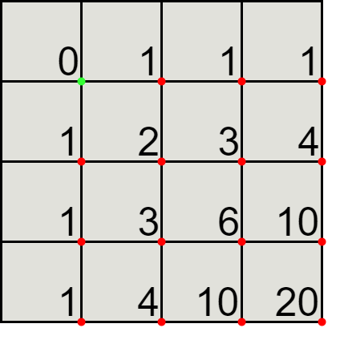

Introduction
This document gathers explanations on the solutions of the Euler Project exercises. Each exercise has its own part, which can be discovered in the table of contents. You can find the source code of every solution as well as the source code of my mdBook on my Github: TurtleSmoke Project Euler.
Project Euler
What is Project Euler?
Project Euler is a series of challenging mathematical/computer programming problems that will require more than just mathematical insights to solve. Although mathematics will help you arrive at elegant and efficient methods, the use of a computer and programming skills will be required to solve most problems.
The motivation for starting Project Euler, and its continuation, is to provide a platform for the inquiring mind to delve into unfamiliar areas and learn new concepts in a fun and recreational context.
Who are the problems aimed at?
The intended audience include students for whom the basic curriculum is not feeding their hunger to learn, adults whose background was not primarily mathematics but had an interest in things mathematical, and professionals who want to keep their problem solving and mathematics on the cutting edge.
Currently we have 1036139 registered members who have solved at least one problem, representing 220 locations throughout the world, and collectively using 108 different programming langues to solve the problems.
Can anyone solve the problems?
The problems range in difficulty and for many the experience is inductive chain learning. That is, by solving one problem it will expose you to a new concept that allows you to undertake a previously inaccessible problem. So the determined participant will slowly but surely work his/her way through every problem.
What next?
In order to track your progress it is necessary to setup an account and have Cookies enabled.
If you already have an account, then Sign In. Otherwise, please Register – it's completely free! However, as the problems are challenging, then you may wish to view the Problems before registering.
Project Euler exists to encourage, challenge, and develop the skills and enjoyment of anyone with an interest in the fascinating world of mathematics.
Multiples of 3 and 5
If we list all the natural numbers below 10 that are multiples of 3 or 5, we get 3, 5, 6 and 9. The sum of these multiples is 23.
Find the sum of all the multiples of 3 or 5 below 1000.
Brute force
The first problem is actually quite easy, the naive solution is to iterate over each number between 0 and 1000 and check those that are multiples of 3 or 5.
From solution1.py:
def sum_of_three_and_five(limit=1000):
return sum(i for i in range(limit) if i % 3 == 0 or i % 5 == 0)
Three by three
The Brute force is actually quite slow, at least it would be if the limit was greater than 1000. Since only multiples of 3 and 5 are useful, iterating 3 by 3 and then 5 by 5 will be faster. We have to be careful with the multiples of 3 and 5 because they will be counted twice. So we have to subtract them from the result.
From solution2.py:
def sum_of_three_and_five(limit=1000):
sum_3 = sum(i for i in range(0, limit, 3) if i % 3 == 0)
sum_5 = sum(i for i in range(0, limit, 5) if i % 5 == 0)
sum_15 = sum(i for i in range(0, limit, 15) if i % 15 == 0)
return sum_3 + sum_5 - sum_15
Summing everything
The Three by three solution is quite interesting because it reduces the problem into smaller parts. For example, the sum of multiples of three is the following:
\[ 3 + 6 + 9 + 12 + 15 + ... \] \[ 3 * ( 1 + 2 + 3 + 4 + 5 ...) \] \[ 3 * \sum_{i=0}^{\lfloor\frac{1000}{3}\rfloor} x_i \]
It is the sum of an arithmetic sequences, which is equal to:
\[ \frac{n*(n+1)}{2} \]
The Three by three solution can be reduced to:
\[ 3 * \frac{\lfloor\frac{999}{3}\rfloor * (\lfloor\frac{999}{3}\rfloor + 1)}{2} +5 * \frac{\lfloor\frac{999}{5}\rfloor * (\lfloor\frac{999}{5}\rfloor + 1)}{2} -15 * \frac{\lfloor\frac{999}{15}\rfloor * (\lfloor\frac{999}{15}\rfloor + 1)}{2} \]
Note that the limit is 999 because 1000 should not be included.
From solution3.py:
def sum_of_three_and_five(limit=999):
limit_3 = limit // 3
limit_5 = limit // 5
limit_15 = limit // 15
sum_3 = 3 * (limit_3 * (limit_3 + 1) // 2)
sum_5 = 5 * (limit_5 * (limit_5 + 1) // 2)
sum_15 = 15 * (limit_15 * (limit_15 + 1) // 2)
return sum_3 + sum_5 - sum_15
Solution
233168
Even Fibonacci numbers
Each new term in the Fibonacci sequence is generated by adding the previous two terms. By starting with 1 and 2, the first 10 terms will be:
1, 2, 3, 5, 8, 13, 21, 34, 55, 89, ...
By considering the terms in the Fibonacci sequence whose values do not exceed four million, find the sum of the even-valued terms.
Brute force
The Fibonacci numbers form a sequence, called the Fibonacci sequence, such that each number is the sum of the two preceding ones, starting from 0 and 1.
The sum of all even numbers in the Fibonacci sequence less than 4 million can be calculated quite easily by iterating over the sequence until the threshold is reached by adding each even number to the result.
From solution1.py:
def sum_of_even_fibonacci_numbers(limit=4000000):
f0 = 1
f1 = 2
res = 0
while f0 < limit:
if f0 % 2 == 0:
res += f0
f0, f1 = f1, f0 + f1
return res
Fibonacci recurrence
If we take a look at the Fibonacci series:
0, 1, 1, 2, 3, 5, 8, 13, 21, 34, 55, 89, 144, 233, 377, 610, ...
Since our only concern is the parity of the numbers, with O being odd and E even:
E, O, O, E, O, O, E, O, O, E, O, O, E, O, O, E, ...
It seems that every third number of the series is even, let's try to prove it properly.
\[ \begin{gather} If\ n=0\ then\ F_{0}=0\ is\ even\\\\ Assuming\ that\ F_ {3n} \ is\ even.\\ \\ F_{3( n+1)} =F_{3n+2} +F_{3n+1} =( F_{3n+1} +F_{3n}) +F_{3n+1} =2F_{3n+1} +F_ {3n}\\ \\ Since\ F_{3n} \ is\ even\ and\ 2F_{3n+1} \ is\ also\ even,\ we\ have\ F_{3( n+1)} \ even\\ because\ it\ is\ the\ sum\ of\ two\ even\ numbers. \end{gather} \]
This mean that the series of even Fibonacci number is:
\[ \begin {gather} E_{n} = F_{3n}\\ E_{n+2} = F_{3n+6} = F_{3n+5} + F_ {3n+4}\\ E_{n+2} = (F_{3n+4} + F_{3n+3}) + (F_{3n+3} + F_{3n+2})\\ E_{n+2} = (F_{3n+3} + F_{3n+2} + F_{3n+3}) + (F_{3n+3} + F_{3n+1} + F_{3n})\\ E_{n+2} = 3F_{3n+3} + (F_{3n+2} + F_{3n+1}) + F_{3n}\\ E_{n+2} = 4F_{3(n+1)} + F_{3n}\\ E_{n+2} = 4E_{n+1} + E_{n}\\ \end{gather} \]
Which result int the following recurrence relation:
\[ E_{n} = 4E_ {n-1} + E_{n-2} \]
We are searching for:
\[ \sum_{k=1}^ {n}E_k \]
This can be simplified as follows:
\[ \begin{align} \sum_{k=1}^{n}E_ {k+1} &= \sum_{k=1}^{n}4E_{k} + \sum_{k=1} ^{n}E_{k-1}\\ \sum_{k=1}^{n}E_{k}&= \frac{1}{4}(\sum_{k=1}^{n}E_{k+1} - \sum_{k=1}^{n}E_{k-1})\\ &= \frac{1}{4}(\sum_{k=2}^{n+1}E_{k} - \sum_{k=0}^{n-1}E_{k})\\ &= \frac{1}{4}(E_{n+1} + E_{n} - E_1 - E_0)\\ &= \frac{1}{4}(E_{n+1} + E_{n} - 2)\\ \end{align} \]
The result can be calculated by iterating until \( E_{n+1} \) is greater than the limit, so that \( E_n \) is less than the limit, then apply the previous function.
From solution2.py:
def sum_of_even_fibonacci_numbers(limit=4000000):
e0 = 0
e1 = 2
while e1 < limit:
e0, e1 = e1, 4 * e1 + e0
return (e1 + e0 - 2) // 4
Fibonacci and the golden ratio
Although the number of iterations of the second solution is lower than that of the first solution, it is possible to do better:
\[ \begin{align} \frac{1}{4}(E_{n+1} + E_{n} - 2) &= \frac{1}{4}(F_{3(n+1)} + F_{3n} - 2)\\ &= \frac{1}{4}(F_{3n+2} + F_{3n+1} + F_{3n} - 2)\\ &= \frac{1}{4}(2F_{3n+2} - 2)\\ &= \frac{1}{2}(F_{3n+2} - 1)\\ \end{align} \]
This does not really change the problem, since we still need to iterate until \( F_{3n} \) reach the limit and then compute \(\frac{1}{2}(F_ {3n+2} - 1)\).
Actually, the Fibonacci numbers can be approximated with the following equation:
\[ F_{n} = \frac{\varphi^{n} - (-\varphi)^{-n}}{\sqrt{5}} \]
where \( \varphi = \frac{1+\sqrt{5}}{2} \) is the golden ratio.
\( -(-\varphi)^{-n} \) can be ignored for large numbers which gives the equation:
\[ F_{n} = \frac{\varphi^{n}}{\sqrt{5}} \]
The limit is the n-th Fibonacci number such that:
\[ \begin{align} F_{n} &\leqslant M\\ \frac{\varphi ^{n}}{\sqrt{5}} &\leqslant M\\ \varphi ^{n} &\leqslant \sqrt{5} M\\ n\log( \varphi ) &\leqslant \log\left(\sqrt{5} M\right)\\ n &\leqslant \left\lfloor \frac{\log\left(\sqrt{5} M\right)}{\log( \varphi )} \right\rfloor \end{align} \]
The result can be computed with \(\frac{1}{2}(F_{n+2} - 1) \) where \( n = \left\lfloor \frac{\log\left(\sqrt{5} M\right)}{\log( \varphi )} \right\rfloor \):
From solution3.py:
def sum_of_even_fibonacci_numbers(limit=4000000):
golden_ratio = (1 + sqrt(5)) / 2
n = floor(log(sqrt(5) * limit) / log(golden_ratio))
fn = round((golden_ratio**(n + 2)) / sqrt(5))
return (fn - 1) // 2
Solution
4613732
Largest prime factor
The prime factors of 13195 are 5, 7, 13 and 29.
What is the largest prime factor of the number 600851475143 ?
Brute force
\( i \) is a factor of \( n \) if \( n\ \equiv\ 0\ [i] \), in our case it is enough to iterate over each number. When a factor is found, we simply divide \( n \) by that factor and continue as long as \( n \) is greater than one. When \( n \) is equal to one, we simply return the current factor which is also the largest.
From solution1.py:
def largest_prime_factor(n=600851475143):
res = 2
while n != 1:
if n % res == 0:
n //= res
else:
res += 1
return res
Two by Two
Since all primes except 2 are odd and in our case 2 is not a factor of 600851475143, we can start with 3 and iterate two by two, which is not a great improvement, but this problem has no interesting solution anyway.
From solution2.py:
def largest_prime_factor(n=600851475143):
res = 3
while n != 1:
if n % res == 0:
n //= res
else:
res += 2
return res
Solution
6857
Largest palindrome product
A palindromic number reads the same both ways. The largest palindrome made from the product of two 3-digit numbers is 9009 = 91 × 99.
Find the largest palindrome made from the product of two 3-digit numbers.
Brute force
We are searching the largest palindrome made from the product of two 3-digit numbers. Firstly, it is necessary to know when a number is a palindrome. This can be done easily using python iteration.
From solution1.py:
def is_palindrome(n):
return str(n) == str(n)[::-1]
A better solution exists using modulus and division, but performance is not the goal here.
The range of 3-digit numbers is \( [100; 999] \), the naive solution will consist in simply iterate over each number and check which product is the largest palindrome. A little trick: if \( 100 * 200 \) does not work, \( 200 * 100 \) won't work either, so the second loop starts from the current number of the first one.
From solution1.py:
def largest_palindrome_product():
res = 0
for x in range(100, 1000):
for y in range(x, 1000):
if x * y > res and is_palindrome(x * y):
res = x * y
return res
Factorisation is the key
We know that the researched number is larger than \( 100*100 = 10000 \) and smaller than \( 999*999 = 998001 \). So it must be of the form \( abcba \) or \( abccba \). Let's assume it is of the form \( abccba \), if it does not work, we'll try with \( abcba \).
\( abccba = 10001a + 10010b + 1100c = 11(9091a + 910b + 100c) \) which means that the palindrome must be divisible by 11. Since 11 is prime, either \( 100001a \), \( 10010b \) or \( 1100c \) is a multiple of 11, which is why the iteration can be done 11 by 11.
From solution2.py:
def largest_palindrome_product():
res = 0
for x in range(110, 1000, 11):
for y in range(x, 1000):
if x * y > res and is_palindrome(x * y):
res = x * y
return res
We went from 405450 iterations with the Brute force to 36450 iterations !
With pen and paper
In Factorisation is the key, we assume that the number was of the form \( abccba \). Since it is the factor of two 3-digit number, we have :
\[ \begin{align} abccba &= (100a + 10b + c)(100d + 10e + f)\\ &= 10000ad + 1000(bd + ae) + 100(cd + be + af) + 10(ce + bf) + cf \end{align} \]
Assuming the first digit is 9, then \( cf \) must be equal to 9 as well.
The only ways to make the last digit nine are:
\[ 1 * 9\\ 3 * 3\\ 7 * 7 \]
Thus, both number must start with 9 and end with either 1, 3, 7 or 9. We also know that \( 100a + 10b + c \) or \( 100d + 10e + f \) is divisible by 11. The only numbers divisible by 11 and ending with 1, 3, 7 or 9 in the \( [900; 999] \) are :
\[ 913\\ 957\\ 979 \]
This give us:
\[ \text{a = 9}\\ \text{b = 1, 5 or 7}\\ \text{c = 3, 7 or 9}\\ \]
Resulting in the numbers:
\[ (900 + 10 + 3)(900 + 10e + 3) = 824439 + 9130x\\ (900 + 50 + 7)(900 + 10e + 7) = 867999 + 9570x\\ (900 + 70 + 9)(900 + 10e + 1) = 882079 + 9790x \]
The first number implies that \( e \) is equal to 9 because if \( e \) was equal to 8, then \(824439 * 9130 * 8 = 897479 \) would not start with 9. With \( e = 9 \) we have \( 913 * 993 \) which is the correct answer. Both \( (900 + 50 + 7)(900 + 10e + 7) \) and \( (900 + 70 + 9)(900 + 10e + 1) \) give smaller palindrome.
Solution
906609
Smallest multiple
2520 is the smallest number that can be divided by each of the numbers from 1 to 10 without any remainder.
What is the smallest positive number that is evenly divisible by all of the numbers from 1 to 20?
Brute force
As always, the brute force solution is quite simple, first determine if a number is evenly divisible by all numbers from 1 to 20.
From solution1.py:
def is_evenly_divisible(n):
for i in range(1, 21):
if n % i != 0:
return False
return True
Then iterate until you find a solution.
From solution1.py:
def smallest_multiple():
i = 1
while not is_evenly_divisible(i):
i += 1
return i
Prime factorization
The Brute force is actually very slow. A better solution can be found using prime factorization. The key is to understand that when \( x \) divides \( y \) evenly, it is because the prime factors of \( x\) are contained in \( y \). For example, \( 20 = 2^2 * 5 \) which means that a number divisible by 20 is also divisible by 2, 4 and 5.
Calculating the prime factorization of each number from 1 to 20 give us:
\[\begin{align} 20 &= 2^2 * 5\\ 19 &= 19\\ 18 &= 2 * 3^2\\ 17 &= 17\\ 16 &= 2^4\\ 15 &= 3 * 5\\ 14 &= 2 * 7\\ 13 &= 13\\ 12 &= 2^2 * 3\\ 11 &= 11\\ \end{align} \]
We can stop here, because 10 is included in 20, 9 in 18, 8 in 16, 7 in 14, 6 in 12, 5 in 20, 4 in 20, 3 in 18, 2 in 20 and 1 in 20.
It gives us the answer: \( 2^4 * 3^2 * 5 * 7 * 11 * 13 * 17 * 19 = 232792560 \).
Least common multiple
Actually, the problem is to find the least common multiple which is:
\[ LCT(1, 2, ..., N) \]
To find the \( LCT \) of \( 1 \) through \( N \), we need all the primes \( \leqslant N \). For each prime, we need its maximum power that won't exceed \( N \). Which can be done easily using logarithms:
\[ \begin{align} p^{k} &\leqslant N\\ k\log( p) &\leqslant \log( N)\\ k&=\left\lfloor \frac{\log( N)}{\log( p)}\right\rfloor\\ \end{align} \]
So the \( LCT \) of \( 1 \) through \( N \) is:
\[ \prod p^{\left\lfloor \frac{\log(N)}{\log(p)} \right\rfloor } \]
We also know that it's pointless to search the maximum power of primes greater than \( \sqrt{n} \) because it will always be 1.
From solution2.py:
def smallest_multiple(n=20):
# Returns a list of all primes <= n
primes = sieve.primerange(n + 1)
sqrt_n, log_n = sqrt(n), log(n)
res = 1
for p in primes:
if p < sqrt_n:
res *= p**(floor(log_n / log(p)))
else:
res *= p
return res
Solution
232792560
Sum square difference
The sum of the squares of the first ten natural numbers is, \[ 1^2 + 2^2 +...+10^2=385 \] The square of the sum of the first ten natural number is, \[ (1+2+...10)^2 = 3025 \] Hence the difference between the sum of the squares of the first ten natural numbers and the square of the sum is \( 3025 - 385 = 2640 \)
Find the difference between the sum of the squares of the first one hundred natural numbers and the square of the sum.
Brute force
Finding the difference between the sum of the squares and the square of the sum required two steps:
Find the sum of the squares:
From solution1.py:
def sum_of_squares(n):
return sum(i**2 for i in range(1, n + 1))
And the square of the sum:
From solution1.py:
def square_of_sum(n):
return sum(i for i in range(1, n + 1))**2
Finally, just subtract the square of the sum by the sum of the squares:
From solution1.py:
def sum_square_difference(n=100):
return square_of_sum(n) - sum_of_squares(n)
Summation formula
We learned in Problem 1: Multiples of 3 and 5 that:
\[ \sum{k} = \frac{n(n+1)}{2} \]
This gives the following formula for the square of the sum:
\[ (1+2+...+10)^2 = \left(\sum{k}\right)^2 = \left(\frac{n(n+1)}{2}\right)^2 = \frac{n^2 (n+1)^2}{4} \]
The sum of the squares can be found using the formula:
\[ \sum{k^2} = \frac{n(n+1)(2n+1)}{6} \]
There are many demonstrations to prove this equation, let's just look at one of them:
\[ \begin{align} ( k-1)^{3} &=k^{3} -3k^{2} +3k-1\\ k^{3} -( k-1)^{3} &=3k^{2} -3k+1\\ \sum _{k=1}^{n}\left( k^{3} -( k-1)^{3}\right) &=\sum _{k=1}^{n} 3k^{2} -3k+1 \\ \sum _{k=1}^{n} k^{3} -\sum _{k=1}^{n}( k-1)^{3} &=3\sum _{k=1}^{n} k^{2} -3\sum _{k=1}^{n} k+\sum _{k=1}^{n} 1\\ \sum _{k=1}^{n} k^{3} -\sum _{k=0}^{n-1} k^{3} &=3\sum _{k=1}^{n} k^{2} -3\frac{n( n+1)}{2} +n\\ n^{3} &=3\sum _{k=1}^{n} k^{2} -3\frac{n( n+1)}{2} +n\\ \sum _{k=1}^{n} k^{2} &=\frac{1}{3} n^{3} +\frac{n( n+1)}{2} -\frac{1}{3} n\\ \sum _{k=1}^{n} k^{2} &=\frac{n( n+1)( 2n+1)}{6} \end{align} \]
The solution can be found in constant time with these two equations:
\[ \frac{n^2(n+1)^2}{4} - \frac{n(n+1)(2n+1)}{6} = \frac{3n^4+2n^3-3n^2-2n}{12} \]
From solution2.py:
def sum_square_difference(n=100):
return (3 * n**4 + 2 * n**3 - 3 * n**2 - 2 * n) // 12
Solution
25164150
10001st prime
By listing the first six prime numbers: 2, 3, 5, 7, 11, and 13, we can see that the 6th prime is 13.
What is the 10 001st prime number?
Brute force
A well known and fast way to generate primes is the Sieve of Eratosthenes. The only problem is that we need an upper bound, which is not the case here since we don't know the size of the 10001st prime.
We will have to test the primality of each number, if it is prime, then we store it, otherwise we continue with the next number until the list of prime numbers that we stored contains 10001 elements. The last one being the answer.
To determine the primality of a number, we can check if one of the preceding primes can divide it, if not, the number is prime.
Since even number can not be prime, we can go two by two just like the Two by Two solution of Problem 3: Largest prime factor.
From solution1.py:
def n_th_prime(n=10001):
i = 3
primes = [2]
while len(primes) < n:
if all(i % p != 0 for p in primes): # No divisor in the previous prime.
primes.append(i)
i += 2
return primes[-1]
Almost six by six
Actually, it is possible to speed up a little the previous program knowing that every prime \( n > 3 \) is of the form :
\[ 6k+1 \text{ or } 6k-1 \]
Let's try to persuade ourselves that this is true. All prime numbers are of the form:
\[ 6k - 1\\ 6k\\ 6k+1\\ 6k+2\\ 6k+3\\ 6k+4\\ \]
Nothing amazing, but as we are looking for prime number, we can remove some of them :
\( 6k \), \( 6k + 2 \) and \( 6k + 4 \) are even number, so they cannot be prime.
\( 6k + 3 = 3(3k + 1) \) which is divisible by 3 and thus not prime (except 3).
Which let us with: \( 6k + 1 \) and \( 6k - 1 \).
Thus, we can rewrite the old program to check only those numbers.
From solution2.py:
def n_th_prime(n=10001):
i = 1
primes = [2, 3]
while len(primes) < n:
if all((6 * i - 1) % p != 0 for p in primes):
primes.append(6 * i - 1)
if all((6 * i + 1) % p != 0 for p in primes):
primes.append(6 * i + 1)
i += 1
return primes[n - 1]
Prime number theorem
As I said in the Brute force solution, the fasted way to generate primes is the sieve of eratosthenes, but it requires an upper bound. We can not find the exact upper bound, but we can have a good approximation using the Prime number theorem:
\[ \pi(N) \sim \frac{N}{\log(N)} \]
Where \( \pi(N) \) is the prime-counting function .
This function give the number of primes \( M \) less than or equal to \( N \), in our case we want to determine \( N \) knowing \( M \). Which give us another formula:
\[ \begin{align} \frac{N}{\log(N)} &\leqslant M\\ \frac{\log(N)}{N} &\leqslant \frac{1}{M}\\ -\frac{\log(N)}{N} &\leqslant -\frac{1}{M}\\ -\frac{\log(N)}{e^{\log(N)}} &\leqslant -\frac{1}{M}\\ -\log(N)e^{-\log(N)} &\leqslant -\frac{1}{M} \end{align} \]
The Lambert \( W \) function says that \( we^w = z \Leftrightarrow w = \mathit{W}_{k}(z) \). This give us:
\[ \begin{align} -\log( N) e^{-\log( N)} &\leqslant -\frac{1}{M}\\ -\log( N) &\leqslant W_{k}\left( -\frac{1}{M}\right)\\ N &\leqslant e^{-W_{k}\left( -\frac{1}{M}\right)} \end{align} \]
The solutions of Lambert's \( W \) function with real number can be found with ony two branches: \( W_0 \) and \( W_{-1} \) suffice.
For real number \( z \) and \( w \) the equation \( we^w = z \) can be solved for \( w \) only if \( w \geqslant -\frac{1}{e} \). if \( z \geqslant 0 \) we get \( w = W_0(z) \) and the two values \( w = W_0(z) \) and \( w = W_{-1}(z) \) if \( -\frac{1}{e} \leqslant w < 0 \).
We have \( w = -\log(N) \) so we are in the second case. We need to determine which of \(W_0(z) \) and \( W_{-1}(z) \) is the right formula.
The branch 0 converge to 1 when \( z \) converge to 0. Actually, for \( M > 3 \) we have \( \lceil W_k(-\frac{1}{M}) \rceil = 1\). It implies that the good branch is -1.
We can actually build the sieve of eratosthenes with the upper bound \( e^ {-W_ {-1}(-\frac{1}{M})} \). Lambert's \( W \) function cannot be expressed in terms of elementary functions, so the formula cannot be simplified. The value of Lambert's \( W \) function requires an iterative method to be found, as this is quite a difficult problem we will use the lambertw from scipy to determine our upper bound.
From solution1.py:
def n_th_prime(n=10001):
if n < 3:
return [2, 3][n - 1]
limit_pi_1 = ceil(exp(-lambertw(-1 / n, -1).real))
primes = sieve.primerange(limit_pi_1 + 1)
return next(islice(primes, n - 1, n))
Note that sieve.primerange returns a generator, so we use slice to get the
n-th element.
When \( N < 3 \), we have \( -\log(N) \geqslant -\frac{1}{e} \) which means the Lambert's W function has no solution. We can simply hard-code the case of 1 and 2.
Solution
104743
Largest product in a series
The four adjacent digits in the 1000-digit number that have the greatest product are 9 × 9 × 8 × 9 = 5832.
\[ \begin{align}\\ 73167176531330624919225119674426574742355349194934\\ 96983520312774506326239578318016984801869478851843\\ 85861560789112949495459501737958331952853208805511\\ 12540698747158523863050715693290963295227443043557\\ 66896648950445244523161731856403098711121722383113\\ 62229893423380308135336276614282806444486645238749\\ 30358907296290491560440772390713810515859307960866\\ 70172427121883998797908792274921901699720888093776\\ 65727333001053367881220235421809751254540594752243\\ 52584907711670556013604839586446706324415722155397\\ 53697817977846174064955149290862569321978468622482\\ 83972241375657056057490261407972968652414535100474\\ 82166370484403199890008895243450658541227588666881\\ 16427171479924442928230863465674813919123162824586\\ 17866458359124566529476545682848912883142607690042\\ 24219022671055626321111109370544217506941658960408\\ 07198403850962455444362981230987879927244284909188\\ 84580156166097919133875499200524063689912560717606\\ 05886116467109405077541002256983155200055935729725\\ 71636269561882670428252483600823257530420752963450\\ \end{align} \]
Find the thirteen adjacent digits in the 1000-digit number that have the greatest product. What is the value of this product?
Brute force
We are searching for the largest product of 13 adjacent digits in a 1000-digit number. We want to calculate the product of each 13 adjacent digits and find the largest one.
The 1000-digit number will be stored in a file, so the first step is to get this number as a string and remove each trailing newline (\n):
From read_file.py:
def read_file(filename):
with open(filename, 'r') as file:
return file.read().replace('\n', '')
Given this string, we need to calculate the product of 13 adjacent digits, which can be done easily using math.prod(). Then, simply repeat this step for all 13 adjacent digits contained in the 1000-digit number and save the maximum of these products.
From solution1.py:
def largest_product_in_series(n, adj=13):
res = 0
for i in range(len(n) - adj):
res = max(prod(int(digit) for digit in n[i: i + adj]), res)
return res
0 are useless
The problem requires calculating a product, a product of something and 0 will always give a result of 0. Which means that every 13 adjacent digits containing 0 are useless since the result will never be the largest product.
The 1000-digit number can actually be split around each 0, of course if a number has less than 13 digits it can be deleted.
From solution2.py:
def split_series(n):
return [sub_n for sub_n in n.split("0") if len(sub_n) >= 13]
Another improvement reside in not calculating every product from the start, for example if we search the product of 3 adjacent digits in 12345, the 3 solutions are:
1*2*3 = 6
2*3*4 = (6 / 1) * 4 = 24
3*4*5 = (24 / 3) * 5 = 60
The second product is the same as the first, just divide the digit that is not present and multiply the one that is. We have to be careful with the digit 0 because division by 0 is an error, but we have already solved the problem just before, so we can assume our number will never contain the digit 0.
From solution2.py:
def largest_product_in_series(n, adj=13):
res = 0
current = prod(int(digit) for digit in n[0: adj])
for i in range(len(n) - adj):
current = (current // int(n[i])) * int(n[i + adj])
res = max(res, current)
return res
We simply repeat this step for each sub-number of the 1000-digit split around 0.
From solution2.py:
def largest_product_in_multiples_series(sub_n, adj=13):
res = 0
for n in sub_n:
res = max(largest_product_in_series(n, adj), res)
return res
Solution
23514624000
Special Pythagorean triplet
A Pythagorean triplet is a set of three natural numbers, a < b < c, for which, \[ a^2 + b ^2 = c^2 \] For example, \( 3^2 + 4^2 = 9 + 16 = 25 = 5^2. \)
There exists exactly one Pythagorean triplet for which a + b + c = 1000.
Find the product abc.
Brute force
We are searching for \( a \), \( b \) and \( c \) such that \( a < b < c \), \( a + b + c = 1000 \) and \( a^2 + b^2 = c^2 \). The brute force solution will simply iterate to 1000 for \( a \), \( b \) and \( c \) and stop when the above equations are true.
From solution1.py:
def special_pythagorean_triplet():
for a in range(1001):
for b in range(a + 1, 1001):
for c in range(b + 1, 1001):
if a + b + c == 1000 and a**2 + b**2 == c**2:
return a * b * c
return -1
With a little thought
The Brute force solution can be simplified a bit knowing that \( a + b + c = 1000 \) implies \( c = 1000 - a - b \). This removes a for loop and an equation, since \( a + b + c = 1000 \) will always be true.
Another simplification can be made by knowing that \( a < b < c \). This implies that \( a \), \( b \) and \( c \) are lower than 500, otherwise \( a + b + c \) will be greater than 1000.
This gives us the following :
From solution2.py:
def special_pythagorean_triplet():
for a in range(501):
for b in range(a + 1, 501):
c = 1000 - a - b
if a**2 + b**2 == c**2:
return a * b * c
return -1
Prime Pythagorean triples
Given an arbitrary pair of integers m and n with m > n > 0. Euclid's formula states that the integers :
\[ a = m^2 - n^2,\ b=2mn,\ c=m^2+n^2 \]
form a Pythagorean triple: \( a^2 + b^2 = c^2 \)
If we calculate \( a^2 + b ^2 \):
\[ a^2 + b^2 = (m^2-n^2)^2 + (2mn)^2 = m^2 + 4m^2n^2 - 2m^2n^2 + n^2 = (m^2 + n^2)^2 = c^2 \]
Which is coherent, the problem changes from finding \( a \), \( b \) and \( c \) to finding \( m \) and \( n \), we have:
\[ \begin{align} a+b+c &= 1000\\ 2mn + 2m^2 &= 1000\\ n &= \frac{500}{m} - m\\ \end{align} \]
We have \( m > n \) since b must be positive, solving \( n = m \) gives:
\[ \begin{align} m &= \frac{500}{m} - m\\ 0 &= \frac{500 - 2m^2}{m}\\ 0 &= 500 - 2m^2\\ m &= \sqrt(250)\\ \end{align} \]
Resulting in:
\[ m > 16 > \sqrt(250) \]
We also have \( n > 0 \), solving \( n = 0 \) gives:
\[ \begin{align} 0 &= \frac{500}{m} - m\\ 0 &= 500 - m^2\\ m &= \sqrt(500)\\ \end{align} \]
Resulting in:
\[ m < \sqrt(500) < 23 \]
We also know that \( \frac{500}{m} \) is an integer, so m must divide \( 500 \). The only multiple of that divides \( 500 \) with the constraint \( 16 > m > 23 \) is 20. Having \( m = 20 \) result in \( n = 5 \). It gives \( a = 200 \), \( b = 375 \) and \( c \) = 425.
The solution can also be found by using a for loop to find \( m \) and \( n \) with the above constraints.
From solution3.py:
def special_pythagorean_triplet():
for m in range(16, 24):
for n in range(1, m):
if m * (n + m) == 500:
return 2 * m * n * (m**4 - n**4)
return -1
Solution
31875000
Summation of primes
The sum of the primes below \( 10 \) is \( 2 + 3 + 5 + 7 = 17 \).
Find the sum of all the primes below two million.
Brute force
We already know, thanks to te previous problems that when one search for all prime numbers below a certain limit, the sieve of eratosthenes is a good solution.
It is enough to sum the list of the primes found with the sieve.
From solution1.py:
def summation_of_primes(limit=2000000):
return sum(sieve.primerange(limit))
Summation minus summation
The sieve of eratosthenes is actually quite slow, it's possible to find a better solution if we consider that we don't need to know all the primes to find their sum. For example, the sum of the primes less than \( 10 \) is \( 2 + 3 + 5 + 7 = 17 \).
The sum of the primes less than \( 10 \) is the sum of the numbers less than 10 minus the sum of the multiples of the primes less than \( \sqrt{10} \) plus the primes themselves minus \( 1 \). In this example, the sum of the multiples of \( 2 \) and \( 3 \):
\[ \begin{alignat}{1} P &&= &&+1&&+2&&+3&&+4&&+5&&+6+7&&+8&&+9&&+10\\ &&&&&&-2&&&&-4&&&&-6&&-8&&&&-10\\ &&&&&&&&-3&&&&&&-6&&&&-9\\ &&&&-1&&+2&&+3\\ P &&= &&&&+2&&+3&&&&+5&&-6+7\\ \end{alignat} \]
There is just one problem, the number \( 6 \) is both a multiple of \( 2 \) and \( 3 \). This means we have to remove the multiple of \( 3 \) but not the multiple of \( 6 \). For numbers larger than 10, if we continue with \( 5 \) we have to remove the multiple of \( 5 \) but not the multiple of \( 2*5=10 \), \( 3*5=15 \) and \( 5*6=30 \).
Let \( \phi(n) \) be the sum of the numbers less than \( n \).
We have the following sequence:
\[ \begin{align} T_0(n) &= \phi(\left\lfloor n \right\rfloor) &&= 1+2+3+\dots\\ T_1(n) &= 2\left(T_0\left(\frac{n}{2}\right)\right) = 2\phi\left (\left\lfloor \frac{n} {2} \right\rfloor \right) &&= 2+4+6+\dots\\ T_2(n) &= 3\left(T_0\left(\frac{n}{3}\right) - T_1\left(\frac{n}{3}\right) \right) = 3\phi \left(\left\lfloor \frac{n}{3} \right\rfloor\right) - 6\phi\left(\left\lfloor \frac{n}{6} \right\rfloor\right) &&= 3+9+15+\dots\\ T_3(n) &= 5\left(T_0\left(\frac{n}{5}\right) - T_1\left(\frac{n}{5}\right) - T_2\left(\frac{n}{5}\right) \right) = 5\phi\left(\left\lfloor\frac{n}{5}\right\rfloor\right) - 10\phi\left(\left\lfloor\frac{n}{10}\right\rfloor\right) - 15\phi\left(\left\lfloor\frac{n}{15} \right\rfloor\right) + 30\phi\left(\left\lfloor\frac{n}{30} \right\rfloor\right) &&= 5+25+35+\dots\\ \end{align} \]
So the k-th term is:
\[ T_k(n) = p_k\left(T_0\left(\frac{n}{p_k}\right) - \dots - T_{k-1}\left (\frac{n} {p_k}\right)\right) \]
Where \( p_k \) is the k-th prime.
We can create a function to find \( T_k \) if we have \( p_k \):
From solution2.py:
def tk(n, k):
pk = primes[k - 1]
t0 = phi(floor(n / pk))
tn = sum([tk(n / pk, i) for i in range(1, k)])
return pk * (t0 - tn)
The sum of the primes less than \( n \) is the sum of the numbers less than \( n \) minus the sum of all the multiples of the primes less than \( \sqrt {n} \) plus the primes themselves minus \( 1 \):
\[ \left(T_0(n) - T_1(n) - \dots - T_k(n)\right) + \left(p_1 + p_2 + \dots + p_k\right) - 1 \]
From solution2.py:
def summation_of_primes(limit=2000000):
phi = lambda x: x * (x + 1) // 2
primes = list(sieve.primerange(floor(sqrt(limit)) + 1))
def tk(n, k):
pk = primes[k - 1]
t0 = phi(floor(n / pk))
tn = sum([tk(n / pk, i) for i in range(1, k)])
return pk * (t0 - tn)
return phi(limit) - sum([tk(limit, i + 1) for i in range(len(primes))]) \
+ sum(primes) - 1
Dynamic programming
The Summation minus summation solution gives an interesting solution because we found the sum of the primes less than \( n \) with only the primes less than \( \sqrt{n} \). Unfortunately, this solution is not efficient because it requires too much recursion for larger n.
The main problem with the previous solution was to remove the numbers that were multiples of previous primes. For example with the multiples of \( 3 \), the number \( 6 \) was already removed by the multiples of \( 2 \).
What we really want is to remove the multiples of \( 3 \) that have not already been removed by the multiples of \( 2 \) such as \( 6 \), \( 12 \) ... For \( 5 \) that would be the number that are neither multiples of \( 2 \) nor \( 3 \).
Instead of the sum of the multiples of a prime, we will search for the sum of integer that remain after sieving with all primes smaller than the current one.
This solution is well explained by Lucy_Hedgehog in this thread (only available if you solve the problem):
The main idea is as follows: Let \( S(v,m) \) be the sum of integers in the range \( 2 \dots v \) that remain after sieving with all primes smaller or equal than \( m \). That is \( S(v,m) \) is the sum of integers up to \( v \) that are either prime or the product of primes larger than \( m \).
\( S(v, p) \) is equal to \(S(v, p-1) \) if \( p \) is not prime or \( v \) is smaller than \( p*p \). Otherwise (\( p \) prime, \( p*p\leqslant v \)) \( S(v,p) \) can be computed from \(S(v, p-1)\) by finding the sum of integers that are removed while sieving with \( p \). An integer is removed in this step if it is the product of \(p \) with another integer that has no divisor smaller than \(p \). This can be expressed as
\[ S\left(v, p \right) = S\left(v, p - 1\right) - p\left(S\left(\frac{v}{p}, p - 1\right) -S\left(p-1, p-1\right)\right) \]
Dynamic programming can be used to implement this. It is sufficient to compute \( S(v,p) \) for all positive integers \( v \) that are representable as \( \left\lfloor\frac{n}{k}\right\rfloor \) for some integer \( k \) and all.
From solution3.py:
def partial_prime_sum(n=2000000):
r = ceil(sqrt(n))
V = [n // i for i in range(1, r + 1)]
V += list(range(V[-1] - 1, 0, -1))
S = {i: i * (i + 1) // 2 - 1 for i in V}
for p in range(2, r + 1):
if S[p] > S[p - 1]: # p is prime
sp = S[p - 1] # sum of primes smaller than p
p2 = p * p
for v in V:
if v < p2: break
S[v] -= p * (S[v // p] - sp)
return S[n]
Solution
142913828922
Largest product in a grid
In the 20×20 grid below, four numbers along a diagonal line have been marked in red.
\[ 08\ 02\ 22\ 97\ 38\ 15\ 00\ 40\ 00\ 75\ 04\ 05\ 07\ 78\ 52\ 12\ 50\ 77\ 91\ 08\\ 49\ 49\ 99\ 40\ 17\ 81\ 18\ 57\ 60\ 87\ 17\ 40\ 98\ 43\ 69\ 48\ 04\ 56\ 62\ 00\\ 81\ 49\ 31\ 73\ 55\ 79\ 14\ 29\ 93\ 71\ 40\ 67\ 53\ 88\ 30\ 03\ 49\ 13\ 36\ 65\\ 52\ 70\ 95\ 23\ 04\ 60\ 11\ 42\ 69\ 24\ 68\ 56\ 01\ 32\ 56\ 71\ 37\ 02\ 36\ 91\\ 22\ 31\ 16\ 71\ 51\ 67\ 63\ 89\ 41\ 92\ 36\ 54\ 22\ 40\ 40\ 28\ 66\ 33\ 13\ 80\\ 24\ 47\ 32\ 60\ 99\ 03\ 45\ 02\ 44\ 75\ 33\ 53\ 78\ 36\ 84\ 20\ 35\ 17\ 12\ 50\\ 32\ 98\ 81\ 28\ 64\ 23\ 67\ 10\ \color{red}{26}\ 38\ 40\ 67\ 59\ 54\ 70\ 66\ 18\ 38\ 64\ 70\\ 67\ 26\ 20\ 68\ 02\ 62\ 12\ 20\ 95\ \color{red}{63}\ 94\ 39\ 63\ 08\ 40\ 91\ 66\ 49\ 94\ 21\\ 24\ 55\ 58\ 05\ 66\ 73\ 99\ 26\ 97\ 17\ \color{red}{78}\ 78\ 96\ 83\ 14\ 88\ 34\ 89\ 63\ 72\\ 21\ 36\ 23\ 09\ 75\ 00\ 76\ 44\ 20\ 45\ 35\ \color{red}{14}\ 00\ 61\ 33\ 97\ 34\ 31\ 33\ 95\\ 78\ 17\ 53\ 28\ 22\ 75\ 31\ 67\ 15\ 94\ 03\ 80\ 04\ 62\ 16\ 14\ 09\ 53\ 56\ 92\\ 16\ 39\ 05\ 42\ 96\ 35\ 31\ 47\ 55\ 58\ 88\ 24\ 00\ 17\ 54\ 24\ 36\ 29\ 85\ 57\\ 86\ 56\ 00\ 48\ 35\ 71\ 89\ 07\ 05\ 44\ 44\ 37\ 44\ 60\ 21\ 58\ 51\ 54\ 17\ 58\\ 19\ 80\ 81\ 68\ 05\ 94\ 47\ 69\ 28\ 73\ 92\ 13\ 86\ 52\ 17\ 77\ 04\ 89\ 55\ 40\\ 04\ 52\ 08\ 83\ 97\ 35\ 99\ 16\ 07\ 97\ 57\ 32\ 16\ 26\ 26\ 79\ 33\ 27\ 98\ 66\\ 88\ 36\ 68\ 87\ 57\ 62\ 20\ 72\ 03\ 46\ 33\ 67\ 46\ 55\ 12\ 32\ 63\ 93\ 53\ 69\\ 04\ 42\ 16\ 73\ 38\ 25\ 39\ 11\ 24\ 94\ 72\ 18\ 08\ 46\ 29\ 32\ 40\ 62\ 76\ 36\\ 20\ 69\ 36\ 41\ 72\ 30\ 23\ 88\ 34\ 62\ 99\ 69\ 82\ 67\ 59\ 85\ 74\ 04\ 36\ 16\\ 20\ 73\ 35\ 29\ 78\ 31\ 90\ 01\ 74\ 31\ 49\ 71\ 48\ 86\ 81\ 16\ 23\ 57\ 05\ 54\\ 01\ 70\ 54\ 71\ 83\ 51\ 54\ 69\ 16\ 92\ 33\ 48\ 61\ 43\ 52\ 01\ 89\ 19\ 67\ 48\\ \]
The product of these numbers is \( 26 × 63 × 78 × 14 = 1788696 \).
What is the greatest product of four adjacent numbers in the same direction (up, down, left, right, or diagonally) in the \( 20 \times 20 \) grid?
Brute force
This problem is not interesting, the solution is simply to iterate on each row, column and on the two diagonal.
As with Largest product in a series, the input grid will be stored in a file, so the first step is to obtain this grid as int matrix.
From read_file.py:
def read_file(filename):
with open(filename, 'r') as file:
return [[int(x) for x in line.split(' ')] for line in
file.read().split('\n')[:-1]] # Last element is an empty line
And then just iterate on this matrix:
From solution1.py:
def largest_product_in_grid(filename):
g = read_file(filename)
for y in range(0, 20):
for x in range(0, 17):
yield g[x][y] * g[x + 1][y] * g[x + 2][y] * g[x + 3][y]
for x in range(0, 20):
for y in range(0, 17):
yield g[x][y] * g[x][y + 1] * g[x][y + 2] * g[x][y + 3]
for y in range(0, 17):
for x in range(0, 17):
yield g[x][y] * g[x + 1][y + 1] * g[x + 2][y + 2] * g[x + 3][y + 3]
for x in range(3, 20):
for y in range(0, 17):
yield g[x][y] * g[x - 1][y + 1] * g[x - 2][y + 2] * g[x - 3][y + 3]
Solution
70600674
Highly divisible triangular number
The sequence of triangle numbers is generated by adding the natural numbers. So the 7th triangle number would be \(1 + 2 + 3 + 4 + 5 + 6 + 7 = 28 \). The first ten terms would be:
\[ 1, 3, 6, 10, 15, 21, 28, 36, 45, 55, \dots \]
Let us list the factors of the first seven triangle numbers:
\[ \begin{align} 1&: 1\\ 3&: 1,3\\ 6&: 1,2,3,6\\ 10&: 1,2,5,10\\ 15&: 1,3,5,15\\ 21&: 1,3,7,21\\ 28&: 1,2,4,7,14,28\\ \end{align} \]
We can see that 28 is the first triangle number to have over five divisors.
What is the value of the first triangle number to have over five hundred divisors?
Brute force
Finding the number of factors of \( n \) can be done by iterating from 1 to \( n \) and checking each number that can divide \( n \).
From solution1.py:
def number_of_factors(n):
res = 1
for i in range(2, n):
if n % i == 0:
res += 1
return res
Triangular number can be computed quite easily with a loop, we can generate them as long as their number of divisor is less than \( 500 \).
From solution1.py:
def highly_div_triangular_number(n=500):
i = 1
res = 1
while number_of_factors(res) < n:
i += 1
res += i
return res
Common factor
The Brute Force solution is really slow, way to slow to be honest.
First, we can improve the way we find the number of factors. If \( i \) divides \( n \), then obviously \( \frac{n}{i} \) divides \( n \) too. We do not need to iterate from 2 to \( n \) but only to \( \sqrt{n} \) and add the factors two by two. The only exception is that if \( \sqrt{n} \) divides \( n \) we only need to count it once.
From solution2.py:
def number_of_factors(n):
res = 1
root = floor(sqrt(n))
for i in range(2, root):
if n % i == 0:
res += 1
return 2 * res + (root**2 == n)
This makes the solution much faster, but there is still room for improvement in the way the triangular numbers are calculated. We already know from the previous problems that the sum of integer from \( 1 \) to \( n \) is \(\frac{n(n+1) }{2} \). Since \( n \) and \( n + 1 \) have no factors in common except \( 1 \), we can multiply the number of factor in \( \frac{n}{2} \) and \( n + 1 \) or \( n \) and \( \frac{n+1}{2} \) depending on the parity of \( n \). This allows us to calculate the number of factors of smaller numbers, which makes the solution quite fast compared to the Brute force solution.
From solution2.py:
def highly_div_triangular_number(n=500):
i = 0
factors = 0
while factors < n:
i += 1
if i % 2 == 0:
factors = number_of_factors(i // 2) * number_of_factors(i + 1)
else:
factors = number_of_factors(i) * number_of_factors((i + 1) // 2)
return i * (i + 1) // 2
Solution
76576500
Large sum
Work out the first ten digits of the sum of the following one-hundred 50-digit numbers.
\[ 37107287533902102798797998220837590246510135740250\\ 46376937677490009712648124896970078050417018260538\\ 74324986199524741059474233309513058123726617309629\\ 91942213363574161572522430563301811072406154908250\\ 23067588207539346171171980310421047513778063246676\\ 89261670696623633820136378418383684178734361726757\\ 28112879812849979408065481931592621691275889832738\\ 44274228917432520321923589422876796487670272189318\\ 47451445736001306439091167216856844588711603153276\\ 70386486105843025439939619828917593665686757934951\\ 62176457141856560629502157223196586755079324193331\\ 64906352462741904929101432445813822663347944758178\\ 92575867718337217661963751590579239728245598838407\\ 58203565325359399008402633568948830189458628227828\\ 80181199384826282014278194139940567587151170094390\\ 35398664372827112653829987240784473053190104293586\\ 86515506006295864861532075273371959191420517255829\\ 71693888707715466499115593487603532921714970056938\\ 54370070576826684624621495650076471787294438377604\\ 53282654108756828443191190634694037855217779295145\\ 36123272525000296071075082563815656710885258350721\\ 45876576172410976447339110607218265236877223636045\\ 17423706905851860660448207621209813287860733969412\\ 81142660418086830619328460811191061556940512689692\\ 51934325451728388641918047049293215058642563049483\\ 62467221648435076201727918039944693004732956340691\\ 15732444386908125794514089057706229429197107928209\\ 55037687525678773091862540744969844508330393682126\\ 18336384825330154686196124348767681297534375946515\\ 80386287592878490201521685554828717201219257766954\\ 78182833757993103614740356856449095527097864797581\\ 16726320100436897842553539920931837441497806860984\\ 48403098129077791799088218795327364475675590848030\\ 87086987551392711854517078544161852424320693150332\\ 59959406895756536782107074926966537676326235447210\\ 69793950679652694742597709739166693763042633987085\\ 41052684708299085211399427365734116182760315001271\\ 65378607361501080857009149939512557028198746004375\\ 35829035317434717326932123578154982629742552737307\\ 94953759765105305946966067683156574377167401875275\\ 88902802571733229619176668713819931811048770190271\\ 25267680276078003013678680992525463401061632866526\\ 36270218540497705585629946580636237993140746255962\\ 24074486908231174977792365466257246923322810917141\\ 91430288197103288597806669760892938638285025333403\\ 34413065578016127815921815005561868836468420090470\\ 23053081172816430487623791969842487255036638784583\\ 11487696932154902810424020138335124462181441773470\\ 63783299490636259666498587618221225225512486764533\\ 67720186971698544312419572409913959008952310058822\\ 95548255300263520781532296796249481641953868218774\\ 76085327132285723110424803456124867697064507995236\\ 37774242535411291684276865538926205024910326572967\\ 23701913275725675285653248258265463092207058596522\\ 29798860272258331913126375147341994889534765745501\\ 18495701454879288984856827726077713721403798879715\\ 38298203783031473527721580348144513491373226651381\\ 34829543829199918180278916522431027392251122869539\\ 40957953066405232632538044100059654939159879593635\\ 29746152185502371307642255121183693803580388584903\\ 41698116222072977186158236678424689157993532961922\\ 62467957194401269043877107275048102390895523597457\\ 23189706772547915061505504953922979530901129967519\\ 86188088225875314529584099251203829009407770775672\\ 11306739708304724483816533873502340845647058077308\\ 82959174767140363198008187129011875491310547126581\\ 97623331044818386269515456334926366572897563400500\\ 42846280183517070527831839425882145521227251250327\\ 55121603546981200581762165212827652751691296897789\\ 32238195734329339946437501907836945765883352399886\\ 75506164965184775180738168837861091527357929701337\\ 62177842752192623401942399639168044983993173312731\\ 32924185707147349566916674687634660915035914677504\\ 99518671430235219628894890102423325116913619626622\\ 73267460800591547471830798392868535206946944540724\\ 76841822524674417161514036427982273348055556214818\\ 97142617910342598647204516893989422179826088076852\\ 87783646182799346313767754307809363333018982642090\\ 10848802521674670883215120185883543223812876952786\\ 71329612474782464538636993009049310363619763878039\\ 62184073572399794223406235393808339651327408011116\\ 66627891981488087797941876876144230030984490851411\\ 60661826293682836764744779239180335110989069790714\\ 85786944089552990653640447425576083659976645795096\\ 66024396409905389607120198219976047599490197230297\\ 64913982680032973156037120041377903785566085089252\\ 16730939319872750275468906903707539413042652315011\\ 94809377245048795150954100921645863754710598436791\\ 78639167021187492431995700641917969777599028300699\\ 15368713711936614952811305876380278410754449733078\\ 40789923115535562561142322423255033685442488917353\\ 44889911501440648020369068063960672322193204149535\\ 41503128880339536053299340368006977710650566631954\\ 81234880673210146739058568557934581403627822703280\\ 82616570773948327592232845941706525094512325230608\\ 22918802058777319719839450180888072429661980811197\\ 77158542502016545090413245809786882778948721859617\\ 72107838435069186155435662884062257473692284509516\\ 20849603980134001723930671666823555245252804609722\\ 53503534226472524250874054075591789781264330331690\\ \]
Brute force
The main problem is to find a way to add large numbers, because computers can not store large numbers so easily. That's the point of the problem, to find a way to add those numbers. We could use an array to store each digit of each number and add them, but thanks to python and the unifying long integers and integers we can just add these numbers without worrying about memory.
We just need to get the first 10 digits of the additions, which can be done quite easily by converting the number to a string ang get the first 10 characters.
From solution1.py:
def large_sum(filename):
return str(sum(read_file(filename)))[:10]
Solution
5537376230
Longest Collatz sequence
The following iterative sequence is defined for the set of positive integers: \[ \begin{align} & n\ \rightarrow \ \frac{n}{2} \ ( n\ is\ even)\\ & n\ \rightarrow \ 3n+1\ ( n\ is\ odd) \end{align}\]
Using the rule above and starting with 13, we generate the following sequence:
\[ 13 → 40 → 20 → 10 → 5 → 16 → 8 → 4 → 2 → 1 \] It can be seen that this sequence (starting at 13 and finishing at 1) contains 10 terms. Although it has not been proved yet (Collatz Problem), it is thought that all starting numbers finish at 1.
Which starting number, under one million, produces the longest chain?
NOTE: Once the chain starts the terms are allowed to go above one million.
Brute force
Calculating the number of iterations of the Collatz sequence is easy, just follow the sequence until it reaches one, and count the number of iterations to get there:
From solution1.py:
def collatz(n):
iteration = 0
while n != 1:
n = n // 2 if n % 2 == 0 else 3 * n + 1
iteration += 1
return iteration
Then, just check the iteration for each starting number from 1 to 1000000 and return the largest.
From solution1.py:
def longest_collatz_sequence(n=1000000):
res, max_it = 0, 0
for i in range(1, n):
current_it = collatz(i)
if current_it > max_it:
res, max_it = i, current_it
return res
Caching
The Collatz sequence of starting numbers \( 4 \) and \( 8 \) are actually quite similar : \[ \begin{align} &Collatz(4) = 4 \rightarrow 2 \rightarrow 1\\ &Collatz(8) = 8 \rightarrow 4 \rightarrow 2 \rightarrow 1\\ \end{align} \]
By calculating \( Collatz(8) \) we ended up recalculating \( Collatz(4) \), if we keep in memory the number of iterations of \( Collatz(4) \), we could reuse it to find the number of iterations of \( Collatz(8) \).
That is what cache is, storing data so that future requests for that data can be served faster.
In our case, when calculating the number of iteration of \( n \), we first look if the value has already been computed, if not, we update the cache using the formula.
From solution2.py:
def longest_collatz_sequence(n=1000000):
cache = {1: 1}
def collatz(i):
if i not in cache:
cache[i] = collatz(i // 2 if i % 2 == 0 else 3 * i + 1) + 1
return cache[i]
return max(range(1, n), key=collatz)
Solution
837799
Lattice paths
Starting in the top left corner of a 2×2 grid, and only being able to move to the right and down, there are exactly 6 routes to the bottom right corner.

How many such routes are there through a 20×20 grid?
Brute force
We are searching for the number of different paths starting from the top left corner and going to the bottom right corner of a \( 20 \times 20 \) square. The only possible moves are down and right. This is the same as searching for the Lattice path.
Since the square is \( 20 \times 20 \) we have 20 moves down and 20 moves to the right. If we move to the right, then we have 20 moves down and 19 moves to the right, we can continue as long as we have moves available.
The solution can be done recursively, starting with 20 moves down and right, the result being the combination of paths down and to the right. Each times we move down we call the function recursively with the same number of moves to the right, but one less move down. When the number of move down is 1, the result is obviously 1: the only remaining path is the one to the right. The same can be done for the move to the right.
From solution1.py:
def lattice_paths(up=20, down=20):
moves_down = lattice_paths(up, down - 1) if down > 1 else 1
moves_up = lattice_paths(up - 1, down) if up > 1 else 1
return moves_up + moves_down
Dynamic programming
The Brute force solution is not efficient at all, for example, if we go down and then right or right and then down, we end up in the same place. The Brute force solution will compute the answer twice.
We could use a cache, but let's do this solution iteratively rather than recursively.
We can represent the solution using a matrix, for example, for a \( 3 \times 3 \) square, we have the number of paths from the green point to the red point for each sub parallelogram.

Looking at the \( 2 \times 2 \) sub square, we can see that the number of different paths is indeed 6.
For each red point, the number of different paths to it is the sum of the path above and paths on the left.
For the first row and column, the number of different paths is one: either only downs or only rights. Then, we can simply compute the path to the other red points using the old ones, we simply return the value at the last cell.
From solution2.py:
def lattice_paths(n=20):
n += 1
paths = np.zeros((n, n), dtype=int)
for i in range(1, n):
paths[i, 0] = 1
paths[0, i] = 1
for i in range(1, n):
for j in range(1, n):
paths[i, j] = paths[i - 1, j] + paths[i, j - 1]
return paths[n - 1, n - 1]
Combination
For a square of dimension \( n \), we know that whatever path we take, there will be exactly \( n \) movements to the right and \( n \) movements down. We can represent the path as a string of 'D' for down and 'R' for right.
For example, with a \( 3 \times 3 \) square, a path could be : 'RRRDDD', 'DDDRRR' or 'RDDRDR'. The question now is, 'In how many ways can we place the ' R' and the 'D' in the string ?'
Since there must be as many 'D' as 'R', we can only place the 'R' and leave the rest as 'D'. That means we are searching for the number of ways we can place \( n \) 'R' in a string of \( 2n \) characters. This is called a combination, in our case, it's:
\[ \begin{pmatrix} 2n\\ n \end{pmatrix} = \frac{\left(2n\right)!}{n!\left(2n - n\right)!} = \frac{\left (2n\right)!}{\left(n!\right)^2} \]
This can be calculated using factorial:
From solution2.py:
def lattice_paths(n=20):
return factorial(2 * n) // (factorial(n)**2)
Solution
137846528820
Power digit sum
\( 2^{15} = 32768 \) and the sum of its digits is \( 3 + 2 + 7 + 6 + 8 = 26.\)
What is the sum of the digits of the number \( 2^{1000} \)?
Brute force
Thanks to python, the solution is trivial, we just need to sum the digits of a number, which can be done by casting it into a string and iterating on it.
From solution1.py:
def power_digit_sum(n=1000):
return sum((int(d) for d in str(2**n)))
Solution
1366
Number letter counts
If the numbers 1 to 5 are written out in words: one, two, three, four, five, then there are \( 3 + 3 + 5 + 4 + 4 = 19 \) letters used in total.
If all the numbers from 1 to 1000 (one thousand) inclusive were written out in words, how many letters would be used?
NOTE: Do not count spaces or hyphens. For example, 342 (three hundred and forty-two) contains 23 letters and 115 (one hundred and fifteen) contains 20 letters. The use of "and" when writing out numbers is in compliance with British usage
Brute force
This problem is boring, there is nothing interesting to do, we can only count some word several times. For example, the word "hundred" is used 900 times from 100 to 999, this allows some factoring. We can do the same for the number from 1 to 9, for "and", for 10, 20, 30, ...
From solution17.py:
def number_letter_counts():
unit = len("onetwothreefourfivesixseveneightnine")
ten = len("teneleventwelvethirfourfifsixseveneighnine") + len("ten") * 7
and_l = len("and")
twenty = len("twentythirtyfortyfiftysixtyseventyeightyninety")
hun = len("hundred")
thou = len("onethousand")
return thou + 900 * hun + 190 * unit + 100 * twenty + 891 * and_l + 10 * ten
Solution
21124
Maximum path sum I
By starting at the top of the triangle below and moving to adjacent numbers on the row below, the maximum total from top to bottom is 23.
\[ \begin{gather} \color{red}{3}\\ \color{red}{7}\quad 4\\ 2 \quad \color{red}{4}\quad 6\\ 8\quad 5\quad \color{red}{9}\quad 3\\ \end{gather} \]
That is, 3 + 7 + 4 + 9 = 23.
Find the maximum total from top to bottom of the triangle below:
\[ \begin{gather} 75\\ 95\quad 64\\ 17\quad 47\quad 82\\ 18\quad 35\quad 87\quad 10\\ 20\quad 04\quad 82\quad 47\quad 65\\ 19\quad 01\quad 23\quad 75\quad 03\quad 34\\ 88\quad 02\quad 77\quad 73\quad 07\quad 63\quad 67\\ 99\quad 65\quad 04\quad 28\quad 06\quad 16\quad 70\quad 92\\ 41\quad 41\quad 26\quad 56\quad 83\quad 40\quad 80\quad 70\quad 33\\ 41\quad 48\quad 72\quad 33\quad 47\quad 32\quad 37\quad 16\quad 94\quad 29\\ 53\quad 71\quad 44\quad 65\quad 25\quad 43\quad 91\quad 52\quad 97\quad 51\quad 14\\ 70\quad 11\quad 33\quad 28\quad 77\quad 73\quad 17\quad 78\quad 39\quad 68\quad 17\quad 57\\ 91\quad 71\quad 52\quad 38\quad 17\quad 14\quad 91\quad 43\quad 58\quad 50\quad 27\quad 29\quad 48\\ 63\quad 66\quad 04\quad 68\quad 89\quad 53\quad 67\quad 30\quad 73\quad 16\quad 69\quad 87\quad 40\quad 31\\ 04\quad 62\quad 98\quad 27\quad 23\quad 09\quad 70\quad 98\quad 73\quad 93\quad 38\quad 53\quad 60\quad 04\quad 23\\ \end{gather}
\]NOTE: As there are only 16384 routes, it is possible to solve this problem by trying every route. However, Problem 67, is the same challenge with a triangle containing one-hundred rows; it cannot be solved by brute force, and requires a clever method! ;o)
Brute force
Even if the problem tells us not to use brute force, we will still do it. Not because we want to do things easily, but because it will be much easier to find a better solution later after solving the problem the first time.
First, we need to transform the triangle into something easier to manipulate, for example a two-dimensional array.
The problem can be solved quite easily after that, with a simple recursion: The maximum score is the current number plus the highest score by choosing the left or the right.
It is enough to stop when we are outside the triangle, since the lower number is 0, we can consider that leaving the triangle is like adding 0.
From solution1.py:
def maximum_path_sum_I(filename):
triangle = read_file(filename)
def path(i, j):
if i >= len(triangle) or j >= len(triangle[i]):
return 0
return triangle[i][j] + max(path(i + 1, j), path(i + 1, j + 1))
return path(0, 0)
Dynamic programming
The Brute force solution has some issue, for example with the following triangle:
\[ \begin{gather} 01\\ 02\quad 03\\ 04\quad \color{red}{05}\quad 06\\ 07\quad \color{green}{08}\quad \color{green}{09}\quad 10\\ \end{gather} \]
The path \( 1 \rightarrow 2 \rightarrow 5 \) and the path \( 1 \rightarrow 3 \rightarrow 5 \) both end on 5 and then try to find the best solution between 8 and 9. Obviously, the best choice is 9, because it is the largest number between 8 and 9 and there is no path left to take. It doesn't depend on where we come from, which means that we can replace the number 5 with \( 5 + 9 = 14 \). We can do the same with 4 and 6, which then gives the following triangle:
\[ \begin{gather} 01\\ 02\quad 03\\ \color{red}{12}\quad \color{red}{14}\quad \color{red}{16}\\ 07\quad 08\quad 09\quad 10\\ \end{gather} \]
And we can go all the way to the end by reducing the last line each time:
\[ \begin{gather} 01\\ \color{red}{16}\quad \color{red}{19}\\ 12\quad 14\quad 16\\ 07\quad 08\quad 09\quad 10\\ \end{gather} \]
And finally:
\[ \begin{gather} \color{red}{20}\\ 16\quad 19\\ 12\quad 14\quad 16\\ 07\quad 08\quad 09\quad 10\\ \end{gather} \]
This solution is much faster because it doesn't recalculate anything twice, it just chooses the best path from the end, since we don't need to know where we came from to find the best incoming path.
From solution1.py:
def maximum_path_sum_I(filename):
triangle = read_file(filename)
for i in range(len(triangle) - 2, -1, -1):
for j in range(len(triangle[i])):
triangle[i][j] += max(triangle[i + 1][j], triangle[i + 1][j + 1])
return triangle[0][0]
Solution
1074
Counting Sundays
You are given the following information, but you may prefer to do some research for yourself.
- 1 Jan 1900 was a Monday.
- Thirty days has September,
April, June and November.
All the rest have thirty-one,
Saving February alone,
Which has twenty-eight, rain or shine.
And on leap years, twenty-nine.- A leap year occurs on any year evenly divisible by 4, but not on a century unless it is divisible by 400.
How many Sundays fell on the first of the month during the twentieth century (1 Jan 1901 to 31 Dec 2000)?
Brute force
This problem is not fascinating, we could start from the first of January 1901 as a Tuesday, and iterate on each month, for example the first day of February 1901 is Tuesday + \( 31\ \%\ 7 \), which is Friday. We could continue by taking leap year into account. But thanks to Python, we can solve this problem with a simpler solution:
From solution1.py:
def counting_sundays():
res = 0
for year in range(1901, 2001):
for month in range(1, 13):
if datetime.datetime(year, month, 1).weekday() == 6:
res += 1
return res
Solution
171
Factorial digit sum
\( n! \) means \( n \times (n − 1) \times ... \times 3 \times 2 \times 1 \)
For example, \( 10! = 10 \times 9 \times ... \times 3 \times 2 \times 1 = 3628800 \), and the sum of the digits in the number \( 10! \) is \( 3 + 6 + 2 + 8 + 8 + 0 + 0 = 27 \).
Find the sum of the digits in the number \( 100! \)
Brute force
As always, problems involving large numbers are easy to solve in Python, just compute the number and iterate on it as a string:
From solution1.py:
def factorial_digit_sum(n=100):
return sum(int(x) for x in str(factorial(n)))
Solution
648
Amicable numbers
Let \( d(n) \) be defined as the sum of proper divisors of \( n \) (numbers less than \( n \) which divide evenly into \( n \)). If \( d (a) = b \) and \( d(b) = a \), where \( a \neq b \), then \( a \) and \( b \) are an amicable pair and each of \( a \) and \( b \) are called amicable numbers.
For example, the proper divisors of 220 are 1, 2, 4, 5, 10, 11, 20, 22, 44, 55 and 110; therefore \( d(220) = 284 \). The proper divisors of 284 are 1, 2, 4, 71 and 142; so \( d(284) = 220 \).
Evaluate the sum of all the amicable numbers under 10000.
Brute force
The problem first requires to find the sum of proper divisors of a number, if recall, in the Problem 12: Highly divisible triangular number, we found the number of proper divisors, we can reuse this function by adding the divisors rather than counting them.
From solution1.py:
def sum_of_factors(n):
res = 1
root = floor(sqrt(n))
for i in range(2, root + 1):
if n % i == 0:
res += i + n // i
return res
We can simply iterate from 1 to 10000 and sum the amicable numbers found to find the solution, we just to be aware that even if \( d(6) = 6 \) and so \( d(6) = 6 \), 6 is not an amicable number because amicable numbers are in pairs.
From solution1.py:
def amicable_numbers(n=10000):
res = 0
for i in range(2, n):
current = sum_of_factors(i)
if i != current and i == sum_of_factors(current):
res += i
return res
Solution
31626
Usage
You can download each solution and modify it as much as you like. However, please do not copy the answer to the Euler project without thinking about it first.
Contributing
You can contribute as much as you want to the project, for more information please see README.md.